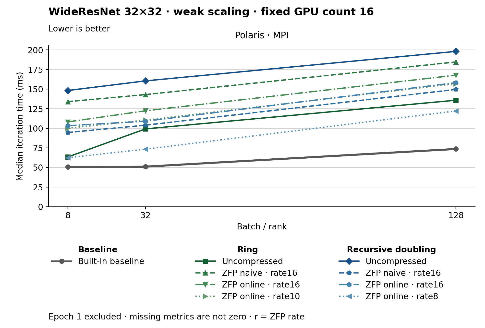

The figure uses lines. Methods use colors, line styles and markers. The metric is Median iteration time (ms). Polaris · MPI, Batch / rank 8: Built-in baseline has the lowest plotted value, 50.570. Polaris · MPI, Batch / rank 32: Built-in baseline has the lowest plotted value, 51.050. Polaris · MPI, Batch / rank 128: Built-in baseline has the lowest plotted value, 73.580. Epoch 1 is excluded. Values are medians; when repeated runs are available the selected repeat policy is median. These are not confidence intervals across repeated jobs. Missing or unrecorded metrics are omitted, not set to zero.
| Panel | Batch / rank | Method | Value | Runs |
|---|---|---|---|---|
| Polaris · MPI | 8 | none | 50.57 | 1 |
| Polaris · MPI | 8 | ring | 63.43 | 1 |
| Polaris · MPI | 8 | ring_zfp_naive:16 | 133.97 | 1 |
| Polaris · MPI | 8 | ring_zfp_online_coll:16 | 108.14 | 1 |
| Polaris · MPI | 8 | ring_zfp_online_coll:10 | 100.16 | 1 |
| Polaris · MPI | 8 | recursive_doubling | 148.2 | 1 |
| Polaris · MPI | 8 | recursive_doubling_zfp_naive:16 | 94.66 | 1 |
| Polaris · MPI | 8 | recursive_doubling_zfp_online_coll:16 | 103.28 | 1 |
| Polaris · MPI | 8 | recursive_doubling_zfp_online_coll:8 | 62.49 | 1 |
| Polaris · MPI | 32 | none | 51.05 | 1 |
| Polaris · MPI | 32 | ring | 99.23 | 1 |
| Polaris · MPI | 32 | ring_zfp_naive:16 | 143.01 | 1 |
| Polaris · MPI | 32 | ring_zfp_online_coll:16 | 122.32 | 1 |
| Polaris · MPI | 32 | ring_zfp_online_coll:10 | 110.38 | 1 |
| Polaris · MPI | 32 | recursive_doubling | 160.48 | 1 |
| Polaris · MPI | 32 | recursive_doubling_zfp_naive:16 | 103.96 | 1 |
| Polaris · MPI | 32 | recursive_doubling_zfp_online_coll:16 | 109.03 | 1 |
| Polaris · MPI | 32 | recursive_doubling_zfp_online_coll:8 | 73.35 | 1 |
| Polaris · MPI | 128 | none | 73.58 | 1 |
| Polaris · MPI | 128 | ring | 135.79 | 1 |
| Polaris · MPI | 128 | ring_zfp_naive:16 | 184.63 | 1 |
| Polaris · MPI | 128 | ring_zfp_online_coll:16 | 167.73 | 1 |
| Polaris · MPI | 128 | ring_zfp_online_coll:10 | 157.02 | 1 |
| Polaris · MPI | 128 | recursive_doubling | 198.13 | 1 |
| Polaris · MPI | 128 | recursive_doubling_zfp_naive:16 | 149.57 | 1 |
| Polaris · MPI | 128 | recursive_doubling_zfp_online_coll:16 | 158.19 | 1 |
| Polaris · MPI | 128 | recursive_doubling_zfp_online_coll:8 | 122.09 | 1 |